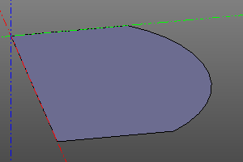

Операции над линиями и циклами
Sew
Операция sew собирает комплексную линию из массива компонентов wires.
Требования. Части линий обязательно должны граничить друг с другом. Порядок не должен быть нарушен.
sew(wires)
sew([
segment((0,0,0), (0,10,0)),
circle_arc((0,10,0),(10,15,0),(20,10,0)),
segment((20,0,0), (20,10,0)),
segment((20,0,0), (0,0,0))
])
Fill
Данная операция применяется к плоской замкнутой линии и превращает ее в грань.
wire = sew([
segment((0,0,0), (0,10,0)),
circle_arc((0,10,0),(10,15,0),(20,10,0)),
segment((20,0,0), (20,10,0)),
segment((20,0,0), (0,0,0))
])
fill(wire)
wire.fill() #alternate

